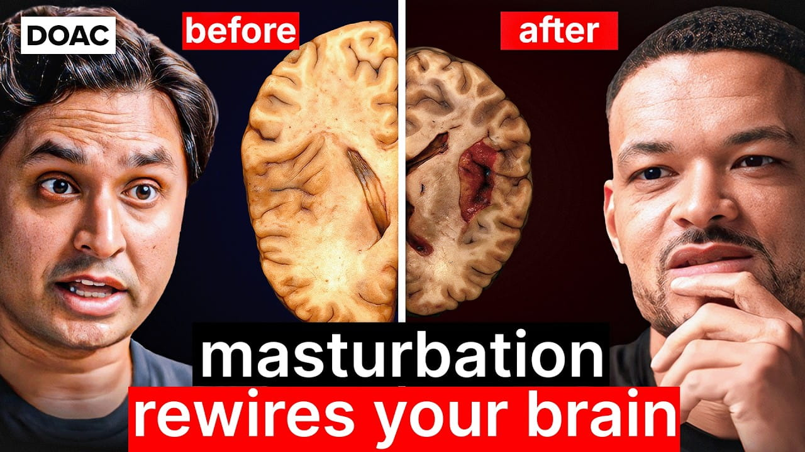

The Porn Addiction Crisis No One Wants to Talk About – Dr. K

Summary
In this interview, the topic is discussed from the viewpoint of neurobiology, psychology, and sociology. The idea is that pornography usage may produce a vicious cycle of emotional control and increased cravings due to a certain mechanism of amygdala inhibition during viewing combined with stimulation of the pleasure center of the brain via dopamine release. In other words, negative feelings such as stress or anxiety may be temporarily suppressed when viewing the content, but the desire for repetitive behavior will only increase due to increased dopamine levels.
The term “post-nut clarity” was also presented in order to illustrate that one's cognitive abilities improve after reaching an orgasm, which leads to feeling regret or losing interest in previous stimuli. In addition to this, the influence of social transformation on people's behavior was explained: decreased opportunities to connect emotionally in person and changes in relationships have caused loneliness.
It was also said that a way to recover lies in emotional control and techniques like urge surfing and deep breathing. Moreover, it is important to find one's purpose, which is called "dharma" in this interview.
Speaker (Guest): Dr. K (Dr. Alok Kanojia)
Interviewer / Host: Steven
Bartlett
Concept of the Interview: Pornography addiction, dopamine dysregulation, and modern mental
health challenges
Personal Opinion
In choosing this interview, I was motivated by my interest in Dr. K's interviews on HealthyGamerGG as well as his collaborations with Dr. Mike. The topic of the interview is particularly interesting, since I was surprised to learn about the relation between porn addiction and dopamine regulation. However, the topic relates to wider issues of motivation, as well. As I understand now, addictive behavior affects the way we process emotions and perceive our rewards from other activities. I agree with the point that overstimulation may have consequences in the real life in terms of people's motivation and behavior. In relation to the first interview, this material is also valuable.
Reflection
Through the interview, I have realized that addictions depend not on poor self-control of individuals, but on how their brains regulate the level of dopamine and what emotional coping strategies they use. Before this interview, I considered such addictions as a part of habitual behavior that requires no serious efforts. Yet, having tried to control myself and limit the amount of media that I consumed for some time, I experienced positive effects on my own motivation and confidence. This experience taught me to treat addictive behavior as something controllable that helps to build good habits.
Date I Watched the Interview
July 11, 2026
New Vocabulary
- Dopamine dysregulation: An imbalance in the brain’s reward system where repeated overstimulation reduces natural motivation and reward sensitivity.
- Reinforcement loop: A cycle where pornography use is strengthened through dopamine release, increasing the likelihood of repeated behavior.
- Emotional avoidance: A coping pattern where individuals use pornography to escape stress, anxiety, or uncomfortable emotions.
- Desensitization: A reduced response to normal stimuli due to repeated exposure to highly stimulating content, leading to reduced satisfaction in real-life experiences.